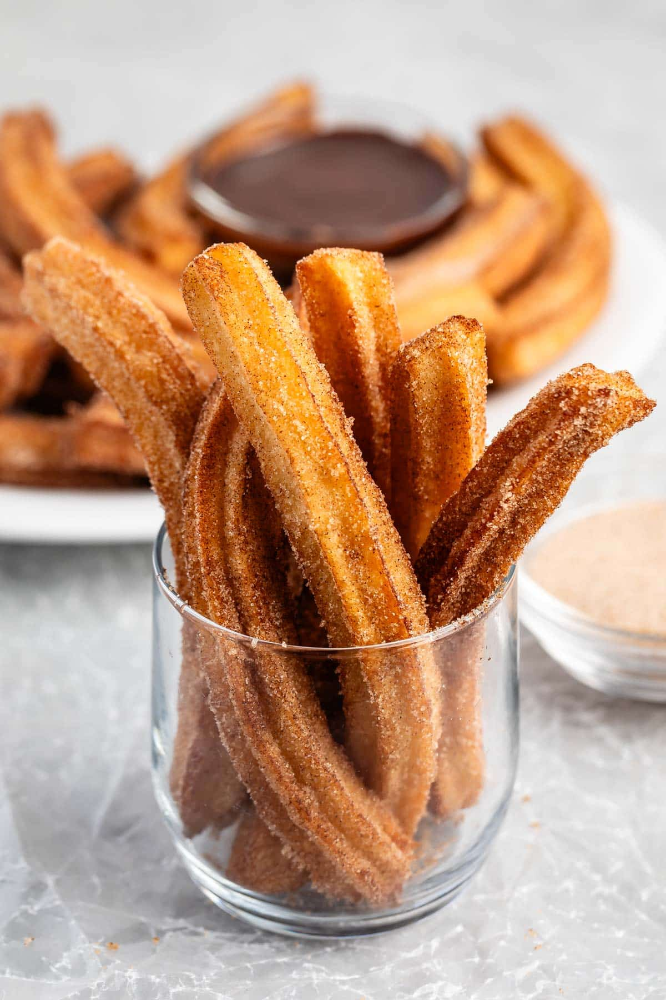

The best Churro recipe
Return Home

Welcome!
Churros are commenly found all over the world.They are popular in the Philippines, The United States and Latin America
Originating from Spanish and Portugese cuisine. Churros are made from Choux pasty. Traditionaly they are fried and dipped in chocolate.
Best when eaten fresh from the oil so they are still warm. lets dig into this recipe enjoyed all over the world.
List of ingredients
- Cinnamon
- Sugar
- butter
- eggs
- flour
- vanilla
- salt
- water
Directions
- Cook water,sugar and butter until melted. Bring to a boil.
- Remove from heat and add foulr.it will form a paste like dough.
- Let the dough cool for one minute. Add to a mixer with a paddle attachment.
Add one egg at a time until fully incorperated into the dough.
Place the dough into a pasty bag with a large piping tip.
Pipe the dough working in batches into hot oil.
Return Home